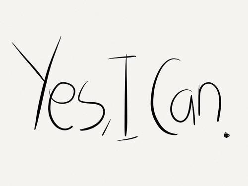
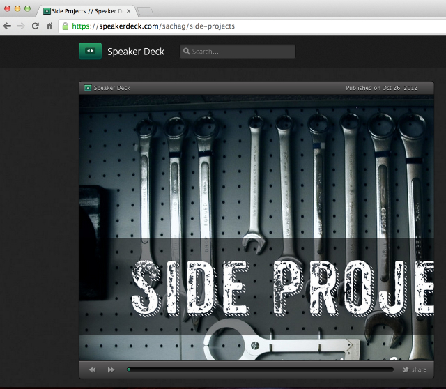

Effective Engineer
Disclaimer
- These tips are based on my experience!
- I could be wrong sometimes. YMMV.
- Dont complain about this slides design.
Who is an Effective Engineer ?
One who......
Knows how to install & configure any general purpose softwares.
- OSes. Like Linux etc... Most of the times
- Editors. Like Vim, Emacs, SublimeText.
- IDEs. Like Eclipse, PyCharm, Intellij-Idea
- Languages. Like Python 2.6.x, 2.7.x, 3.3.x etc...
But!
Does not get glued into one thing.
Like..... Never!
When issues come from various points.
- Editors not working!
- Builds not working!
- Version Control System not working!.
- OS not allowing to use the software you like
- Worst case! App code not working!
But what do I do then ?
Moto-1
Never escape from the problem!
Moto-2
Never Give Up!
and
Moto-3

No! Seriously what do I do ?
Ask why obsessively.
Think a lot
Only for certain time. Max 15 mins on one problem.
Reads/Consumes a lot (from web)
Practice a lot
Yes! More practice

Have constant interest for
Side/Pet Projects

More on Side Projects
- Do everything for a valid need.
- Trying because "something is cool" is also a valid need ;-)
- Works great, if pet projects are diverse in nature. Get out of the comfort zone.
- Keep short goals. Always.
- Keep it open. For iteration, feedback.
- Share/Present it for sure. To any audience.
But practicing may be boring!
sometimes
Be lazy!
Automate!
Automate Anything, Everything
- PNR Status API
- IRCTC Magic Autofill
- Our Release Engineering tools
- Autopep8
- ECS Payments
- Many Many Many Many more!
Be a Fan of something
- Vim ninja ? Great
- AngularJS Rockstar ? Awesome!
- Fan of Rahul ? Get out of here.
- Fan of Modi ? Still...Get out of here.
- Fan of Test Driven Development. The next time I go out for shopping, I will call you!
- Fan of Code Reviews ? I will pay your shopping bill.
- Fan of Apple ? Give me a break!
Why being a Fan helps ?
Thats where your true self comes into play
bingo!
Anything you like it more, you want it desparately.
Anything you want it desparately, you will try to master that.
In this journey, unknowingly you will become an
Effective Engineer!
Thankyou!
But we are not done yet! Take your seats.
Now that you attended this session
What it takes to give a Techtalk ?
>>> Thank You!